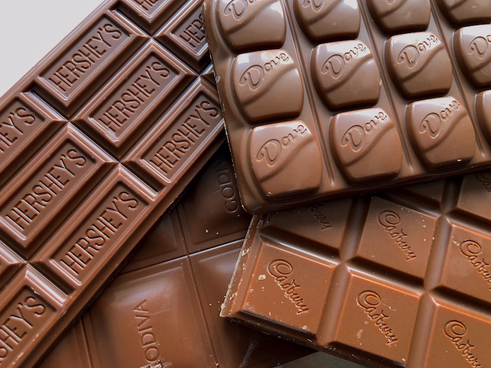

Discover the Rich Flavors of Chocolate
Explore our selection of hand-crafted chocolate types, each with its own unique taste and texture.
Chocolate is a food made from roasted and ground cacao seedkernels that is available as a liquid, solid, or paste, either on its own or as a flavoring agent in other foods. Cacao has been consumed in some form since at least the Olmec civilization (19th-11th century BCE),and the majority of Mesoamerican people including the Maya and Aztecs ─ made chocolate beverages.

Dark Chocolate
Experience the intense flavors of our dark chocolate, made from the finest cacao beans.

Milk Chocolate
Indulge in the smooth and creamy taste of our milk chocolate, perfect for any occasion.